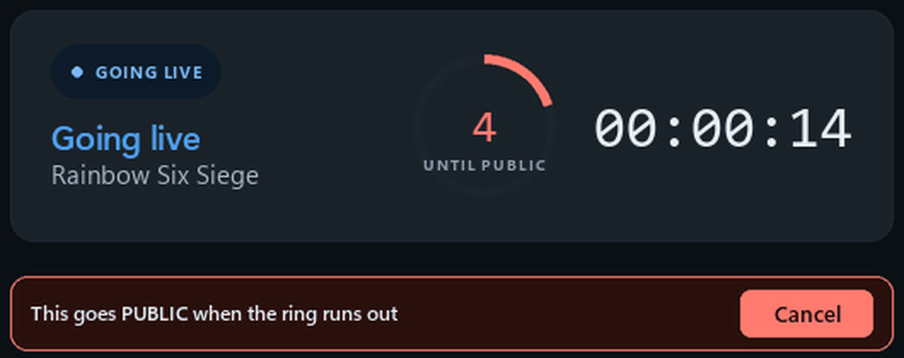

You do not need any of this to make clips, reels or highlights. This is only for people who stream and want AutoStream to start and stop the stream for them.
You need: Windows, OBS Studio (the free streaming app), and an account on YouTube, Twitch or Kick. On YouTube, live streaming has to be switched on for your channel first (on youtube.com, Create, then Go live). On a new channel that can take up to 24 hours, so do it first.
-
Turn streaming on
Choose Stream and clip the first time AutoStream opens, or switch it on later in Settings. Then pick where you stream.
-
Connect your channel
Twitch: paste your stream key, or sign in so it can set the title and category too. Kick: sign in once. YouTube: about ten minutes, following a checklist in the app; the steps are in the details below.
-
Connect OBS
Close OBS, then press Set it up for me. Check the path to OBS and press Test connection. AutoStream opens OBS itself when you start playing, so you never touch its stream settings.
-
Pick your games
Scan my computer finds the games you have installed, Steam and other launchers included. Start on Unlisted for your first week, so only people with the link can see the streams.
-
Play
Open a game and keep it open for 30 seconds. AutoStream starts the stream privately and counts down 20 seconds, with a Cancel button, before anyone can see it. Close the game and it waits five minutes, in case the game crashed, then ends the stream.

From an earlier version of the app. It works the same way today.
Every way to stop it
- Cancel during the private countdown.
- Ctrl+Alt+Shift+K from inside any game stops the stream.
- In the Library, turn a game's Streams switch off: it is recorded, never streamed.
- Turn Go live off in Settings and AutoStream only records.
When AutoStream decides not to stream (on battery, in quiet hours, or if the service refuses), it records the game instead. The Logs page says why.
If something is off
- The stream is a black screen
- Anti-cheat (Valorant, Delta Force, games with EasyAntiCheat) blocks OBS's game capture unless OBS runs as administrator. Turn on Start OBS as administrator in Settings, OBS.
- Nothing happens when I start a game
- It did not recognise the game. The Logs page shows what it saw; add the game's
.exeundergames:ingames.yaml. - It went live for something that is not a game
- Add that
.exeunderblocklist:ingames.yaml. - YouTube stopped working after about a week, with
invalid_grant - Your Google app is still in Testing. See step 4 of the YouTube setup below.
- Stuck on starting, then it gives up
- YouTube is not receiving video. Check live streaming is switched on for the channel, then run setup again.
YouTube: your own Google Cloud projectSix stops in Google's console
AutoStream talks to YouTube through a project that belongs to you, so the daily API allowance is yours alone. The wizard shows these as a checklist.
- Go to console.cloud.google.com and create a project. Any name.
- APIs & Services, Library: enable YouTube Data API v3.
- Google Auth Platform, Branding: set an app name and your email.
- Google Auth Platform, Audience: user type External, then Publish App. Skip verification; you do not need it.
- Google Auth Platform, Data Access: add the scopes
.../auth/youtubeand.../auth/youtube.force-ssl. - Google Auth Platform, Clients: create a client of type Desktop app and download its JSON. Paste its contents into the wizard and press Save credentials.
Do not skip step 4. While the app is in Testing, Google blocks everyone not on
its test-user list, and even for you the sign-in expires after about seven days and streaming quietly stops with
invalid_grant. Access blocked or Error 403 means this step.
Then press Authorise with YouTube. Google says "Google hasn't verified this app". That is expected: it is your own personal app. Choose Advanced, then Go to (your app name) (unsafe), and allow access.
OBS by hand, and how a session runsWebsocket settings, the states, recording
If Set it up for me cannot write OBS's settings
In OBS, Tools, WebSocket Server Settings: tick Enable WebSocket server, leave the port at 4455, set a password, and click Apply before OK. Then press Read the settings from OBS. Use a Game Capture scene, never Display Capture, so a wrong detection shows black rather than your desktop.
The states
IDLE -> ARMING -> STARTING -> TESTING -> LIVE -> COOLDOWN -> STOPPING -> IDLEAutoStream checks what is running every three seconds. A game's .exe is matched against a public
list of about 10,000 games and your Steam library. Arming is the 30-second wait; Testing is the 20 seconds
private; Cooldown is the five minutes after you close the game. After eight hours a broadcast ends regardless.
Switching games
Stay in a different game for a minute and the title is rewritten for it, or, if you chose it in Settings, a new broadcast starts.
Recording while you stream
Off by default: switch it on in Settings, Recording. Budget 20 to 30 GB an hour at the top quality. Your mic, the game and the desktop go on separate audio tracks, which is what lets the clipper hear your reactions.
More safety rails
An empty file called NOSTREAM next to the app stops anything auto-starting. A password manager or
banking app being open vetoes the session. It will not start a broadcast by itself on battery, with under 25 GB
free, or with the YouTube API allowance nearly spent.
Pause and the three cards
Pause keeps the broadcast running and shows your be right back card. Point stream starting, be right back and thanks for watching at a video file or an overlay URL and AutoStream makes the OBS scenes itself.